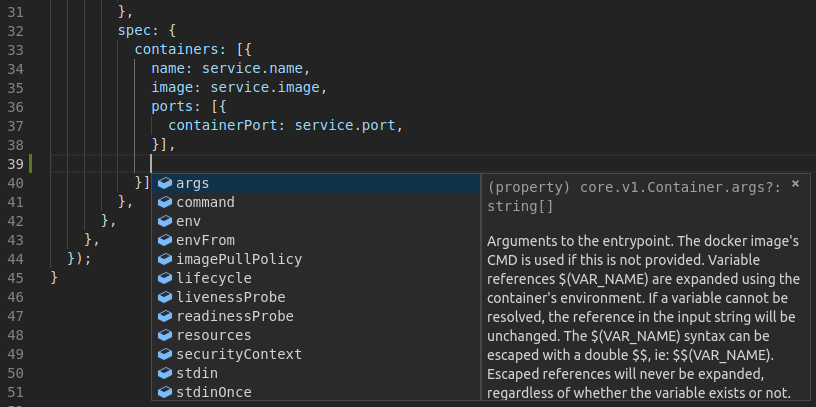
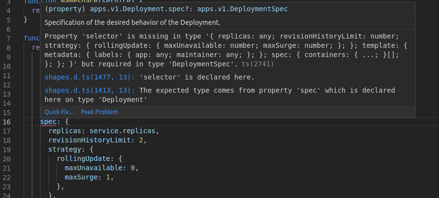

jk - Configuration as code with TypeScript
Of all the problems we have confronted, the ones over which the most brain power, ink, and code have been spilled are related to managing configurations — Borg, Omega, and Kubernetes - Lessons learned from three container-management systems over a decade
This post is the first of a series introducing jk. We will start the
series by showing a concrete example of what jk can do for you.
jk is a javascript runtime tailored for writing configuration files.
The abstraction and expressive power of a programming language makes writing
configuration easier and more maintainable by allowing developers to think at
a higher level.
Let’s pretend we want to deploy a billing micro-service on a Kubernetes
cluster. This micro-service could be defined as:
service:
name: billing
description: Provides the /api/billing endpoints for frontend.
maintainer: damien@weave.works
namespace: billing
port: 80
image: quay.io/acmecorp/billing:master-fd986f62
ingress:
path: /api/billing
dashboards:
- service.RPS.HTTP
alerts:
- service.RPS.HTTP.HighErrorRateFrom this simple, reduced definition of what a micro-service is, we can generate:
- Kubernetes
Namespace,Deployment,ServiceandIngressobjects. - A
ConfigMapwith dashboard definitions that grafana can detect and load. - Alerts for Prometheus using the
PrometheusRulecustom resource defined by the Prometheus operator.
apiVersion: v1
kind: Namespace
metadata:
name: billingapiVersion: apps/v1
kind: Deployment
metadata:
labels:
app: billing
name: billing
namespace: billing
spec:
revisionHistoryLimit: 2
strategy:
rollingUpdate:
maxSurge: 1
maxUnavailable: 0
template:
metadata:
labels:
app: billing
spec:
containers:
- image: quay.io/acmecorp/billing:master-fd986f62
name: billing
ports:
- containerPort: 80apiVersion: v1
kind: Service
metadata:
labels:
app: billing
name: billing
namespace: billing
spec:
ports:
- port: 80
selector:
app: billingapiVersion: extensions/v1beta1
kind: Ingress
metadata:
annotations:
nginx.ingress.kubernetes.io/rewrite-target: /
name: billing
namespace: billing
spec:
rules:
- http:
paths:
- backend:
serviceName: billing
servicePort: 80
path: /api/billingapiVersion: v1
data:
dashboard: '[{"annotations":{"list":[]},"editable":false,"gnetId":null,"graphTooltip":0,"hideControls":false,"id":null,"links":[],"panels":[{"aliasColors":{},"bars":false,"dashLength":10,"dashes":false,"datasource":null,"fill":1,"gridPos":{"h":7,"w":12,"x":0,"y":0},"id":2,"legend":{"alignAsTable":false,"avg":false,"current":false,"max":false,"min":false,"rightSide":false,"show":true,"total":false,"values":false},"lines":true,"linewidth":1,"links":[],"nullPointMode":"null","percentage":false,"pointradius":5,"points":false,"renderer":"flot","repeat":null,"seriesOverrides":[],"spaceLength":10,"stack":false,"steppedLine":false,"targets":[{"expr":"sum
by (code)(sum(irate(http_request_total{job=billing}[2m])))","format":"time_series","intervalFactor":2,"legendFormat":"{{code}}","refId":"A"}],"thresholds":[],"timeFrom":null,"timeShift":null,"title":"billing
RPS","tooltip":{"shared":true,"sort":0,"value_type":"individual"},"type":"graph","xaxis":{"buckets":null,"mode":"time","name":null,"show":true},"yaxes":[{"format":"short","label":null,"logBase":1,"max":null,"min":null,"show":true},{"format":"short","label":null,"logBase":1,"max":null,"min":null,"show":true}]},{"aliasColors":{},"bars":false,"dashLength":10,"dashes":false,"datasource":null,"fill":1,"gridPos":{"h":7,"w":12,"x":12,"y":0},"id":3,"legend":{"alignAsTable":false,"avg":false,"current":false,"max":false,"min":false,"rightSide":false,"show":true,"total":false,"values":false},"lines":true,"linewidth":1,"links":[],"nullPointMode":"null","percentage":false,"pointradius":5,"points":false,"renderer":"flot","repeat":null,"seriesOverrides":[],"spaceLength":10,"stack":false,"steppedLine":false,"targets":[{"expr":"histogram_quantile(0.99,
sum(rate(http_request_duration_seconds_bucket{job=billing}[2m])) by (route) *
1e3","format":"time_series","intervalFactor":2,"legendFormat":"{{route}} 99th
percentile","refId":"A"},{"expr":"histogram_quantile(0.50, sum(rate(http_request_duration_seconds_bucket{job=billing}[2m]))
by (route) * 1e3","format":"time_series","intervalFactor":2,"legendFormat":"{{route}}
median","refId":"B"},{"expr":"sum(rate(http_request_total{job=billing}[2m])) /
sum(rate(http_request_duration_seconds_count{job=billing}[2m])) * 1e3","format":"time_series","intervalFactor":2,"legendFormat":"mean","refId":"C"}],"thresholds":[],"timeFrom":null,"timeShift":null,"title":"billing
Latency","tooltip":{"shared":true,"sort":0,"value_type":"individual"},"type":"graph","xaxis":{"buckets":null,"mode":"time","name":null,"show":true},"yaxes":[{"format":"ms","label":null,"logBase":1,"max":null,"min":null,"show":true},{"format":"short","label":null,"logBase":1,"max":null,"min":null,"show":true}]}],"refresh":"","schemaVersion":16,"style":"dark","tags":[],"time":{"from":"now-6h","to":"now"},"timepicker":{"refresh_intervals":["5s","10s","30s","1m","5m","15m","30m","1h","2h","1d"],"time_options":["5m","15m","1h","6h","12h","24h","2d","7d","30d"]},"timezone":"browser","title":"Service
\u003e billing","uid":"","version":0}]'
kind: ConfigMap
metadata:
labels:
app: billing
maintainer: damien@weave.works
name: billing-dashboards
namespace: billingapiVersion: monitoring.coreos.com/v1
kind: PrometheusRule
metadata:
labels:
app: billing
maintainer: damien@weave.works
prometheus: global
role: alert-rules
name: billing
spec:
groups:
- name: billing-alerts.rules
rules:
- alert: HighErrorRate
annotations:
description: More than 10% of requests to the billing service are failing
with 5xx errors
details: '{{$value | printf "%.1f"}}% errors for more than 5m'
service: billing
expr: |-
rate(http_request_total{job=billing,code=~"5.."}[2m])
/ rate(http_request_duration_seconds_count{job=billing}[2m]) * 100 > 10
for: 5m
labels:
severity: criticalWhat’s interesting to me is that such an approach shifts writing configuration files from a big flat soup of properties to a familiar API problem: developers in charge of the platform get to define the high level objects they want to present to their users, can encode best practices and hide details in library code.
For the curious minds, the jk script used to generate these Kubernetes
objects can be found in the jk repository.
Built for configuration
We’re building jk in an attempt to advance the configuration
management discussion. It offers a different take on existing solutions:
jkis a generation tool. We believe in a strict separation of configuration data and how that data is being used. For instance we do not take an opinionated view on how you should deploy applications to a cluster and leave that design choice in your hands. In a sense,jkis a pure function transforming a set of input into configuration files.jkis cross domain.jkgenerates JSON, YAML, HCL as well as plain text files. It allows the generation of cross-domain configuration. In the micro-service example above, grafana dashboards and Kubernetes objects are part of two different domains that are usually treated differently. We could augment the example further by defining a list of AWS resources needed for that service to operate (eg. an RDS instance) as Terraform HCL.jkuses a general purpose language: javascript. The configuration domain attracts a lot of people interested in languages and the result is many new Domain Specific Languages (DSLs). We do not believe those new languages offer more expressive power than javascript and their tooling is generally lagging behind. With a widely used general purpose language, we get many things for free: unit test frameworks, linters, api documentation, refactoring tools, IDE support, static typing, ecosystem of libraries, …jkis hermetic. Hermeticity is the property to produce the same output given the same input no matter the machine the program is being run on. This seems like a great property for a tool generating configuration files. We achieve this with a custom v8-based runtime exposing as little as possible from the underlying OS. For instance you cannot access the process environment variables nor read file anywhere on the filesystem withjk.jkis fast! By being an embedded DSL and using v8 under the hood, we’re significantly faster than the usual interpreters powering DSLs.
Hello, World!
The jk “Hello, World!” example generates a YAML file from a js
object:
// Alice is a developer.
const alice = {
name: 'Alice',
beverage: 'Club-Mate',
monitors: 2,
languages: [
'python',
'haskell',
'c++',
'68k assembly', // Alice is cool like that!
],
};
// Instruct to write the alice object as a YAML file.
export default [
{ value: alice, file: `developers/${alice.name.toLowerCase()}.yaml` },
];
Run this example with:
$ jk generate -v alice.js
wrote developers/alice.yamlThis results in the developers/alice.yaml file:
beverage: Club-Mate
languages:
- python
- haskell
- c++
- 68k assembly
monitors: 2
name: AliceTyping with TypeScript
The main reason to use a general purpose language is to benefit from its ecosystem. With javascript we can leverage typing systems such as TypeScript or flow to help authoring configuration.
Types help in a number of ways, including when refactoring large amounts of code or defining and documenting APIs. I’d also like to show it helps at authoring time by providing context-aware auto-completion:

In the screenshot above we’re defining a container in a Deployment and the
IDE only offers the fields that are valid at the cursor position along with
the accompanying type information and documentation.
Similarly, typing can provide some level of validation:

The IDE is telling us we haven’t quite defined a valid apps/v1
Deployment. We are missing the mandatory selector field.
Status and Future work
Albeit being still young, we believe jk is already useful enough to be a
contender in the space. There’s definitely a lot of room for improvement
though:
- Helm integration: we’d like
jkto be able to render Helm charts client side and expose the result as js objects for further manipulation. - Jsonnet integration: similarly, it should be possible to consume existing jsonnet programs.
- Native TypeScript support: currently developers need to run the
tsctranspiler by hand. We should be able to makejkconsume TypeScript files natively a la deno. - Kubernetes strategic merging: the object merging primitives are currently quite basic and we’d like to extend the object merging capabilities of the standard library to implement Kubernetes strategic merging.
- Expose type generation for Kubernetes custom resources.
- More helper libraries to generate Grafana dashboards, custom resources for the Prometheus operator, …
- Produce more examples: it’s easy to feel a bit overwhelmed when facing
a new language and paradigm. More examples would make
jkmore approachable.
Try it yourself!
It’s easy to download jk from the github release page and
try it yourself. You can also peruse through the (currently
small amount of) examples.